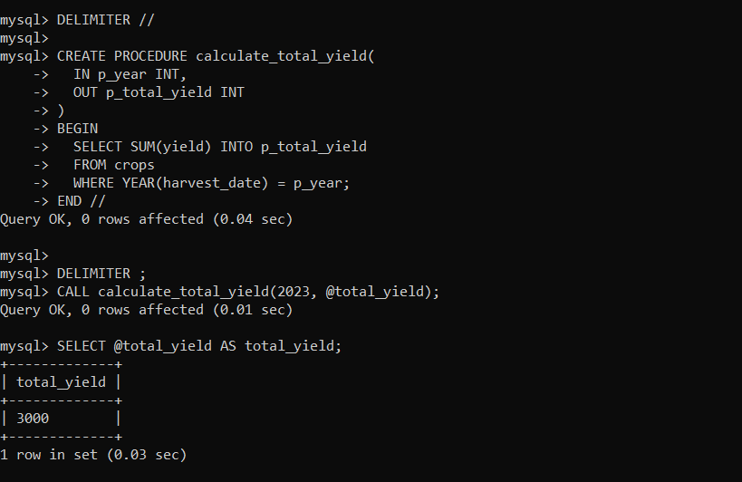
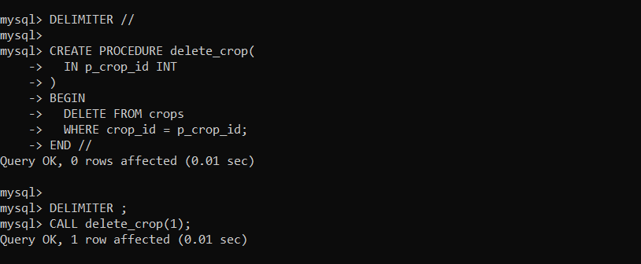

PL/SQL
PL/SQL (Procedural Language/Structured Query Language) is a programming language extension of SQL
used for developing stored procedures, functions, triggers, and packages in Oracle Database. It
allows you to write procedural code to implement business logic and perform complex operations
in the database.
PL/SQL provides features such as variables, control structures (if-else, loops), exception handling,
and modular programming constructs to write powerful and efficient database programs.

